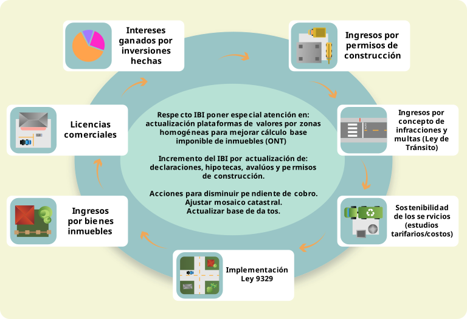

Etapa diagnóstica y de consulta
Sembrando las ideas
Paso 4:
Elaboración del diagnóstico institucional
El diagnóstico institucional es un paso esencial para entender la situación vigente del municipio y su capacidad de gestión. Permite identificar capacidades, limitaciones, oportunidades y amenazas, y es la base para planificar acciones efectivas en el plan de desarrollo municipal.
¿Por qué es importante el diagnóstico?
- Comprensión integral: permite conocer el contexto físico, económico, social y político del municipio y la municipalidad.
- Identificación de factores externos e internos: reconoce los elementos que afectan el desarrollo del territorio y aquellos que están fuera del control municipal (Corporación Andina de Fomento, Dirección de Desarrollo Territorial, s.f.).
- Base para la planificación estratégica: proporciona información clave para planificar estrategias y acciones que respondan a las necesidades reales de la comunidad. Se deben determinar las acciones prioritarias para lograr una gestión municipal que incida positivamente en la promoción del desarrollo humano local (DHL).
¡Importante!
La palabra “municipio” se refiere al contexto geográfico y administrativo de una población específica. Tiene una identidad política y social propia. Incluye comunidades, barrios y distritos que forman parte de una jurisdicción gobernada por la municipalidad.
En cambio, “municipalidad” es el órgano y la estructura del gobierno local que administra el municipio. Está compuesto por el concejo municipal y la alcaldía, así como por distintas áreas que gestionan los servicios y programas municipales.
En última instancia se trata de conseguir que un entorno territorial determinado aproveche sus oportunidades, neutralice las amenazas que se presentan en el entorno externo, utilizando sus puntos fuertes y eliminando y/o superando las debilidades internas. El diagnóstico se constituye así, en un instrumento clave de todo proceso de Planificación Estratégica (DelNet 1999).
¡Importante!
Antes de comenzar un proceso de planificación estratégica, es necesario realizar:
- Un análisis breve del desempeño y funcionamiento interno de su municipalidad.
- Un análisis breve del entorno interno y externo de su municipalidad.
Si su municipalidad ya cuenta con el diagnóstico, le invitamos a revisar esta propuesta y a considerar si hay elementos que requieran ajustes.
Acciones clave
Revisar información existente
Ahora, se recomienda analizar y relacionar la información que pueda ser útil para elaborar el diagnóstico. Para ello, se parte del conocimiento de la situación actual institucional y del territorio. Considere los siguientes insumos básicos:
- Plan Nacional de Desarrollo: contiene la documentación sobre políticas y programas del Gobierno, considerando el ámbito sectorial y regional.
- Información municipal: programa de gobierno de la alcaldía; planes de desarrollo anteriores; plan de ordenamiento territorial (si existe); planes ambientales municipales; gestión de riesgo a desastres, plan quinquenal y cualquier otro plan que describa la situación y contexto cantonal (como poblaciones vulnerables y actividad económica).
- Documentos de concertación: memorias de mesas de trabajo con actores invitados y consultados.
¡Recuerde!
El diagnóstico y el PDM no deben partir de cero ni diseñarse sin bases sólidas. Se requiere considerar las políticas e instrumentos elaborados en la institución y en otros niveles de gobierno.
Análisis institucional y contextual para el desarrollo municipal
En esta fase, se busca que la municipalidad se visualice como una organización y un colectivo de actores en su entorno social, económico, cultural, organizativo y ambiental.
Importancia
- Demanda ciudadana: las comunidades demandan una mejor actuación de los gobiernos locales.
- Transformación institucional: se requiere fortalecer las capacidades políticas y técnicas para ejecutar recursos y funciones eficientemente.
- Acciones eficaces: existen normativas recientes que promueven la planificación estratégica municipal y la mejora administrativa y financiera.
El análisis situacional se enfoca en la capacidad institucional para ejercer sus competencias y responder a las necesidades del municipio. Tiene por objetivo revisar la situación en la que se encuentra la municipalidad, en dos áreas principales: el ambiente en el que se desenvuelve y su propio funcionamiento.
Este análisis permite obtener insumos importantes para definir los objetivos de la institución y la estrategia más adecuada para lograrlos. Además, permite determinar las acciones necesarias para hacer más eficiente y eficaz la gestión municipal, para lo cual es necesario hacernos las siguientes preguntas:
- ¿Qué capacidad tiene el gobierno local para atender las demandas ciudadanas?
- ¿Qué acciones dan resultado actualmente en la municipalidad?
Dinámica de expectativas
Para obtener respuestas precisas, se sugiere utilizar fuentes primarias proporcionadas por las personas funcionarias mediante la técnica de la entrevista semiestructurada. Esta técnica permite recopilar información sobre factores clave que definen el desempeño actual de la municipalidad.
El análisis institucional tiene que considerar, al menos, los siguientes aspectos generales:
Cuadro 7. Aspectos claves para el análisis situacional municipal
| Estratégicos | Operativos | Participativos |
|---|---|---|
|
|
|
Fuente: Elaboración propia, a partir de elementos del proceso diagnóstico propuesto por el proyecto FOMUDE (2009).
Finalmente, es necesario preguntarse:
- ¿Qué cambios son necesarios de llevar a cabo en nuestra municipalidad?
- ¿Cómo mejoraremos el desempeño?
- ¿Qué diferencia queremos hacer?
- ¿A qué elementos o factores críticos debemos responder?
Recurso adicional
Para la primera fase del diagnóstico (análisis situacional), se puede utilizar la guía a fin de desarrollar el perfil municipal actual, contenida en el Módulo 2 del Manual para la Planificación del Desarrollo Humano Local – Tercera Unidad “El Plan Estratégico Municipal”.
En la guía, encontrará indicaciones para el diagnóstico municipal que permite evaluar servicios públicos, infraestructura y gestión de recursos.
Además, en el documento mencionado, se muestran los instrumentos de campo para poder efectuar este ejercicio. A continuación, se presenta un ejemplo de instrumento de campo.
Cuadro 8. Ejemplo de instrumento para recolectar información para el análisis situacional.
| Municipalidad de __________ | ||||||
| Área estratégica: equipamiento | ||||||
| Instrumento de campo # __ | ||||||
| Tema | ¿Qué se debe conocer? | Descripción del estado del proceso o de la situación | ¿Qué cambios introducir en los próximos cinco años para mejorarlo? | ¿Cómo generar los cambios requeridos? | ¿Cuándo generar el cambio? | ¿Quiénes deben involucrarse en estos cambios? |
|---|---|---|---|---|---|---|
| Promoción de infraestructura para garantizar servicios públicos de calidad | ¿Qué proyectos desarrolla la municipalidad para garantizar servicios de calidad en educación, salud, servicios públicos? | |||||
| Infraestructura accesible | ¿Qué proyectos tiene la municipalidad para garantizar infraestructura accesible en cumplimiento de la Ley 7600? | |||||
| Espacios públicos | ¿Qué proyectos tiene la municipalidad para ampliar, mejorar y mantener la infraestructura de los espacios públicos? | |||||
| Fuentes documentales utilizadas (en caso de que corresponda): | ||||||
Fuente: Tomado del Módulo 2 del Manual para la Planificación del Desarrollo Humano Local – Tercera Unidad “El Plan Estratégico Municipal” (2015), página 114.
Diagnóstico sobre la situación financiera y fiscal municipal
En esta primera tarea de reflexión sobre la situación institucional, profundizaremos en la condición financiera y tributaria de la municipalidad.
A continuación, se propone un trayecto para conocer, de primera mano, el contexto económico, financiero y tributario de su municipalidad y, además, para facilitar la identificación de fuentes de financiación viables para ejecutar su PDM.
¡IMPORTANTE!!!
Los planes de desarrollo de los entes municipales deben incluir un plan plurianual de inversiones, donde se establezcan los recursos disponibles para el periodo de gobierno, además de los programas y proyectos en los cuales se realizarán inversiones y la fuente de financiación de cada uno de ellos.
Importancia del diagnóstico financiero y fiscal
- Proyección y administración: la alcaldía debe tener una visión clara del comportamiento de sus finanzas, incluyendo la tendencia en el recaudo de ingresos y el proceder histórico del gasto.
- Toma de decisiones: con esta información, debe tomar medidas informadas en el área tributaria y financiera para incrementar recursos, racionalizar gastos de funcionamiento y maximizar la inversión.
- Legitimidad y gobernabilidad: permitirá el mayor grado de ejecución del PDM y aumentará la capacidad de cumplir sus compromisos y satisfacer las expectativas de la comunidad.
Tareas clave para el diagnóstico financiero
- Recuento del cumplimiento de proyectos ejecutados: evaluar el cumplimiento de los objetivos, programas, proyectos, actividades y metas previstas en los últimos tres años y en el año en curso (periodo en el que se disponga a formular el PDM), sea que se haya realizado dentro de un plan anual operativo (PAO) o fuera de él. Este balance se realizará sobre las actuaciones-inversiones principales que ha realizado la municipalidad para generar impacto en el desarrollo del cantón.
- Evaluación de la ejecución presupuestaria: análisis de los últimos tres años, que debe realizar la persona encargada de contabilidad y presupuesto, para obtener balance sobre ingresos y egresos.
- Evaluación de las alianzas y relaciones: revisar gestiones, coordinaciones, alianzas, convenios y relaciones establecidas en los últimos tres años y el año en curso con la sociedad civil, empresariado local, cooperación internacional (si corresponde), el Gobierno central, entre otros.
- Proyección de ingresos: estimar ingresos futuros provenientes de transferencias del Gobierno, recursos propios (tasas, impuestos), donaciones, préstamos, otros. Se debe determinar, si fuera posible, los topes presupuestarios que se proyectan para los próximos cinco años.
La persona encargada de administración financiera compilará esta información con el apoyo de las personas responsables de cada proceso o área correspondiente.
Acciones
- Efectuar diagnóstico de la situación fiscal de la municipalidad
- Elaborar el plan financiero
- Identificar las fuentes de recursos para financiar el plan
- Diseñar el plan plurianual de inversiones (PPI)
- Definir de estrategias para aumentar los recursos propios y apalancar proyectos
A continuación, se detallan cada una de estas acciones.
El Marco Fiscal de Mediano Plazo, es el instrumento que sirve de referencia para que el Plan de Desarrollo sea viable financieramente porque, de manera indicativa, presenta la proyección de los recursos financieros disponibles en la entidad territorial, con perspectiva de 10 años, lo cual permite que de manera más acertada la Administración programe los pagos a sus acreedores, el servicio a la deuda y sus gastos de funcionamiento e inversión. Este instrumento también se constituye en uno de los principales insumos para definir las estrategias financieras que adoptará el Municipio y que serán plasmadas en Plan de Desarrollo (DNP, 2007, p. 7).
Con base en los indicadores de desempeño fiscal elaborados por el Ministerio de Planificación Nacional y Política Económica (MIDEPLAN) y los indicadores de viabilidad fiscal del Ministerio de Hacienda, se debe realizar un diagnóstico rápido en materia fiscal, el cual, además de permitir comparar la situación de la municipalidad respecto otras del territorio, también, brinda elementos clave para profundizar en la identificación de los problemas y la búsqueda de soluciones.
Específicamente, respecto al diagnóstico fiscal, se debe tener claridad de indicadores de desempeño fiscal, por ejemplo:
- Gasto de funcionamiento
- Respaldo de la deuda
- Dependencia de las transferencias
- Importancia de los recursos propios
- Magnitud de la inversión y capacidad de ahorro
¡IMPORTANTE!
La identificación de la situación financiera, fiscal y presupuestal permitirá que los programas formulados en el PDM sean viables. Así mismo, le permitirá a la administración identificar la necesidad de cofinanciación, convenios y alianzas con otras entidades territoriales, el sector privado o la comunidad.
El plan financiero es un instrumento clave para la planificación y gestión financiera. Su objetivo es prever ingresos, gastos, déficit y formas de financiación, a partir de la elaboración de un diagnóstico y de los objetivos y estrategias definidos.
Una vez elaborado el marco fiscal de mediano plazo, se tiene un panorama más amplio de las finanzas municipales, para efectuar un estimado, gracias a las proyecciones de su plan financiero, de los recursos para funcionamiento e inversión disponibles, y de sus principales fuentes; es decir, se pueden identificar las restricciones presupuestarias a las cuales se enfrentará la administración para financiar las metas definidas en el PDM.
Importancia del plan financiero
El plan financiero establece la capacidad de inversión del municipio, a mediano plazo, para ejecutar los programas y proyectos identificados en el PDM. Se constituye de acuerdo con las prioridades establecidas y posibilidades reales de financiación, fundamentalmente, a través de los recursos propios, las transferencias y los recursos del crédito.
Para este proceso, es recomendable tener claridad sobre los aspectos por trabajar para asegurar el cumplimiento de las regulaciones en materia contable, financiera y tributaria (NICSP – NIIF, recomendaciones y parámetros de la ONT).
La identificación de fuentes de recursos es crucial para garantizar la financiación de la inversión local. La importancia de cada fuente de ingresos se relaciona con el tamaño poblacional del municipio y la dinámica de su actividad económica. Municipios con un gran potencial de contribuyentes, con una gama de actividades o bases gravables y con una actividad económica en crecimiento permanente tendrán la opción de generar recursos tributarios significativos.
El liderazgo de la alcaldía y su equipo de gobierno es importante para:
- Realizar una gestión tributaria eficiente que maximice los ingresos.
- Concientizar a la comunidad sobre la importancia del pago de impuestos (Dirección de Desarrollo Territorial –Grupo de Gestión Pública Territorial, s.f., p.56).
¡Recuerde!
Es importante que la administración conozca las principales fuentes de financiación que tiene la municipalidad y sus destinos específicos, con el fin de garantizar que los gastos se financien de acuerdo con las disposiciones constitucionales, legales y normativas vigentes (Código Municipal – CGR), y para identificar cuáles son los inconvenientes que impiden contar con mayores ingresos.
El PPI es un instrumento que conecta la parte estratégica del PDM con los recursos de inversión disponibles durante el período de gobierno. En él, se detallan las vigencias, las fuentes de financiación y los responsables de su ejecución, de acuerdo con el diagnóstico financiero e institucional realizado y con el costo de los programas y proyectos establecidos.
Recomendaciones:
- Sensibilizar sobre la importancia de cuantificar el costo probable de la estrategia o plan propuesto.
- Trabajar en la proyección de ingresos o en una propuesta de presupuesto plurianual, que incluya proyecciones de ingresos y de gastos, con diferentes niveles de desagregación y para un número determinado de años.
- Reconocer la importancia de un manejo fiscal responsable y analizar las ventajas o dificultades de disponer de marcos plurianuales.
Para asegurar la sostenibilidad financiera del PDM, es fundamental definir estrategias que aumenten los ingresos propios y permitan apalancar proyectos, mediante la cofinanciación, así como determinar la capacidad de endeudamiento.
Algunas acciones
-
Fortalecer la recaudación de impuestos:
- Consolidar el catastro municipal (dinámico, productivo y eficiente).
- Contratar (si corresponde) servicios especializados de digitalización de las bases de datos (acervo registral), procesamiento de información, levantamiento de información en campo.
-
Llevar a cabo una modernización catastral y de los registros de la propiedad y del comercio:
- Generar un incremento en la recaudación de las contribuciones, garantizando la actualización de los valores catastrales y una mayor captación de recursos por derechos registrales.
- Fortalecer la capacidad financiera del municipio, además de contar con información disponible y sistematizada para apoyar la planificación urbana y la dotación de servicios para las comunidades.
-
Mejorar gestión de contribuyentes:
- Dar seguimiento al listado o padrón de contribuyentes y actualizarlo para detectar evasiones fiscales.
- Utilizar recurso humano e infraestructura propios de la institución o contratar gestores independientes especializados, para lograr una mejor recaudación.
- Revisar y actualizar las tarifas por servicios que presta la municipalidad.
- Implementar políticas de pago o revisar las existentes para lograr disminución de la morosidad.
- Mejorar la capacidad de gestión de cobro.
-
Mejorar la ejecución presupuestaria.
- Contar con reportes mensuales sobre ingresos para tomar decisiones, contener gasto o promover la ejecución de obras y proyectos.
-
Seguimiento de planes anuales operativos:
- Dar seguimiento a los diferentes PAO, mediante las herramientas facilitadas por las oficinas o unidades de planificación institucional.
-
Gestión orientada a resultados:
- Avanzar hacia una gestión que priorice una planificación por resultados y, consecuentemente, una presupuestación por resultados.
Figura 1. Acciones para el mejoramiento o generación de ingresos para sostenibilidad del plan de desarrollo municipal.

Fuente: Elaboración propia
Análisis institucional
Finalmente, el análisis institucional se realiza en talleres o mesas de trabajo con el ETM, coordinados por la persona encargada de planificación institucional, quien organizará todos los resultados en un informe ejecutivo. Este informe servirá de soporte para la formulación del PDM y debe contener los siguientes productos:
- Una síntesis de las capacidades institucionales: obstáculos, limitaciones, retos y desafíos.
- Tabulación de resultados e informe sobre alcances de la entrevista aplicada a funcionarios conforme batería de preguntas.
- Resumen de las matrices (instrumentos de campo).
- Aproximación diagnóstica de la situación financiera y tributaria municipal.
- Proyección plurianual presupuestaria (mínimo 3-5 años – máximo 10).
El análisis de factores del entorno políticos, económicos, sociales, tecnológicos, ambientales y legales (PESTAL o PEST) es una estrategia clave para evaluar los factores externos que pueden afectar el desempeño de una municipalidad. Este modelo considera los elementos del entorno en que se desenvuelven las municipalidades, es decir, aquello que no depende directamente de estas, sino que está determinado por el contexto, pero que puede definir la estrategia por seguir. La herramienta PEST ha sido aplicada, básicamente, en temas empresariales (Fahey, Liam y Narayanan, 1968).
Importante
PESTAL es en acrónimo que representa los factores Políticos, Económicos, Sociales y Tecnológicos. También, incorpora factores Ambientales y Legales.
Factores del análisis PESTAL
- Políticos-legales: determinan el funcionamiento de la municipalidad, como los procesos políticos, legislación y normativas vigentes.
- Económicos: incluyen indicadores macroeconómicos que impactan en la municipalidad, como el crecimiento económico, inflación, tasas de cambio, entre otros.
- Socioculturales: reflejan las condiciones demográficas, culturales y educativas que pueden afectar el funcionamiento municipal.
- Tecnológicos: se refieren a las tendencias en sistemas informáticos, comunicación y transporte que pueden influir en la gestión municipal.
- Ambientales: incluyen aspectos como el cambio climático y la legislación ambiental que afectan la gestión municipal.
Este análisis es sustancial para comprender el entorno en el que opera la municipalidad y definir una estrategia adecuada. Es, especialmente, relevante en entidades públicas, ya que revela el contexto en el que se desarrollan las actividades.
¡Recuerde!
Conocer el contexto o entorno en el cual se desarrollará la futura acción estratégica de la municipalidad es indispensable.
Fuentes de información para el análisis PESTAL
Este diagnóstico de la realidad institucional, utilizando el PEST, debe realizarse con base en la revisión de algunas fuentes secundarias que se indican a continuación:
- Plan Nacional de Desarrollo
- Programa macroeconómico BCCR (del periodo que corresponda).
- Programa de Gobierno existente (entregado al concejo)
- Planes municipales (plan vial, plan regulador, plan ambiental, plan de emergencias, otros).
- Plan Regional y Plan Rural Territorial (vigente, si corresponde)
- Indicadores sociales y cantonales MIDEPLAN – PNUD - INCAE.
- Informe de evaluación de la gestión municipal ICG-CGR (últimos tres años).
- Informes de labor (rendición de cuentas).
- Análisis sobre el régimen municipal elaborado por CGR, IFAM, otros.
Este análisis es primordial, sobre todo, si se desea prever o anticipar, de alguna manera, elementos que podrían afectar la puesta en marcha del PDM de su municipalidad. Por eso, se recomienda efectuar el análisis PEST antes del análisis de fortalezas, oportunidades, debilidades y amenazas (FODA), ya que el PEST se centra en factores externos, mientras el FODA, en factores internos.
Importante
Las organizaciones, generalmente, no tienen control directo sobre algunas variables que afectan su funcionamiento; por lo tanto, su éxito depende de si cuentan con la información necesaria para comprender su entorno. Para formalizar el diagnóstico de la situación actual, se utiliza el análisis de factores externos PEST, que analiza las dimensiones políticas, económicas, sociales y tecnológicas de la organización. Este diagnóstico es básico en organismos de carácter público, ya que revela el marco general en el cual se pueden movilizar las personas dentro de la organización.
Ejemplo de análisis PEST
Cuadro 9. Análisis PEST desde la perspectiva político-legal.
| Tema | Descripción |
|---|---|
| Elecciones cantonales 2024 | Se anticipa un cambio en el plan de gobierno local y la priorización de políticas locales debido a las elecciones cantonales de 2024. Esto puede implicar una revisión de las estrategias y enfoques previamente establecidos. |
| Elecciones presidenciales 2022 | Las elecciones presidenciales de 2022 han llevado a un cambio en el Plan de Gobierno Nacional y la priorización de políticas. Además, se menciona un cambio en el enfoque, alejándose de los derechos humanos (DDHH). Esto puede tener implicaciones en la relación entre el Gobierno central y el gobierno municipal, en términos de financiamiento y apoyo para las políticas locales. |
| Centralización de políticas públicas | Se plantea la necesidad de discutir y desarrollar un marco normativo adecuado para el ejercicio de las potestades municipales. Se destaca que, a pesar de otorgarse competencias municipales desde 1949, la ejecución de estas competencias se realiza como transferencia de competencias sin recursos ni posibilidades reales de ejecución. Esto indica una preocupación por la autonomía y la capacidad de los gobiernos locales para tomar decisiones y gestionar recursos de manera efectiva. |
| Ley de Empleo Público | Se menciona que la Ley de Empleo Público ha centralizado el poder y el control unilateral sobre salarios y condiciones laborales, lo que se percibe como una violación a la autonomía y autoadministración municipal. Se señala que la gestión de la evaluación del desempeño busca estandarizar perfiles de puestos y condiciones de ingreso, sin considerar la especificidad competencial de las distintas administraciones y dinámicas. |
| Movimientos sociales | Se destaca la presencia de movimientos sociales, gremios y grupos organizados que expresan su malestar ante la coyuntura política, económica y de seguridad social. Esto puede influir en la formulación de políticas y en la relación entre el gobierno local y la comunidad. |
| Migración | La migración es un factor importante en el cantón, con más del 20% de la población migrante. Se menciona que la migración está relacionada con la cosecha de productos de temporada en zonas rurales y con la oferta académica de la Universidad para la Paz. El sector servicios es un receptor importante de población migrante. |
| Pandemia por COVID-19 | La pandemia ha tenido un impacto significativo en el cantón, incluso la disminución del tránsito de personas, el aumento del desempleo, cierres de negocios por órdenes sanitarias y reducción de ingresos a los gobiernos locales. Esto puede haber afectado la ejecución de proyectos locales y la capacidad financiera del gobierno municipal. |
| Aspectos generales |
|
Fuente: Tomado del análisis PEST, realizado por el área de DHCS como parte de la metodología de trabajo para la elaboración de los Lineamientos Estratégicos de Desarrollo elaborada por la Oficina de Planificación Institucional. Municipalidad de Mora (2023).
“Si pudiéramos saber primero dónde estamos (diagnóstico) y hacia dónde vamos (visión, dirección de desarrollo), podríamos juzgar mejor qué hacer y cómo hacerlo (plan operativo)”.
En esta tercera fase, se realiza un análisis de la situación actual municipal utilizando la metodología FODA que permite identificar fortalezas, oportunidades, debilidades y amenazas. Esta matriz es discutida por el ETM y resulta, en resumen, que identifica las necesidades de desarrollo en la municipalidad y el cantón, contextualizando las capacidades y limitaciones del municipio junto con las oportunidades y amenazas del entorno.
Con este método, se requiere identificar entre cinco y diez fortalezas, oportunidades, debilidades y amenazas. Los resultados del análisis situacional y del análisis PESTAL efectuados en las fases anteriores se deben considerar.
Partes del análisis FODA
- Parte interna (fortalezas y debilidades): examina las fortalezas y debilidades internas de la municipalidad, es decir, los aspectos sobre los cuales se tiene control. Se identifican tanto los elementos que manejan bien como las áreas que requieren mejoras.
- Parte externa (oportunidades y amenazas): explora las oportunidades y amenazas presentes en el entorno externo, como factores regionales y territoriales. Se buscan estrategias para aprovechar las oportunidades y enfrentar las amenazas, incluso cuando se tiene un control limitado sobre ellas.
Para este ejercicio, considere lo realizado en la fase 1. Se puede realizar el FODA utilizando como base los ejes temáticos propuestos anteriormente; no obstante, cada municipalidad podrá definir los ejes o áreas estratégicas de su PDM, de acuerdo con su realidad, tamaño y capacidades.
Ejes propuestos para el análisis FODA
- Desarrollo Institucional
- Infraestructura Institucional
- Equipamiento cantonal
- Ambiente y gestión de riesgo a desastres
- Servicios públicos
- Planificación urbana y ordenamiento territorial
- Política social local
- Desarrollo económico local.
- Seguridad ciudadana.
- Infraestructura vial.
Resultados esperados
- Las matrices de análisis FODA, por eje o área estratégica, elaboradas en el taller / mesa de trabajo posterior al análisis institucional (ver cuadro 10).
- Una síntesis de los principales problemas o demandas priorizados para cada eje temático que deben ser abordados en el próximo quinquenio. Dicha síntesis se puede organizar en una matriz, como lo muestra el cuadro 11, que se presenta más adelante.
Ejemplo de un FODA en un gobierno local
Cuadro 10. Matriz FODA y estrategias resumen sobre área ordenamiento territorial.
| FACTORES EXTERNOS | Matriz FODA y estrategias | Factores internos | |
|---|---|---|---|
FORTALEZAS:
|
DEBILIDADES:
|
||
OPORTUNIDADES:
|
ESTRATEGIAS (FO):
|
ESTRATEGIAS (DO):
|
|
AMENAZAS:
|
ESTRATEGIAS (FA):
|
ESTRATEGIAS (DA):
|
|
Fuente: Tomado de los Lineamientos Estratégicos de Desarrollo de la Municipalidad de Mora. Aporte del área DDCU conforme metodología de trabajo definida para elaboración de los LED, 2023-2032.
Ejemplo de síntesis de problemas identificados a raíz del ejercicio FODA
Cuadro 11. Síntesis de problemas priorizados.
| Eje temático | Subeje | Problema / demanda priorizada |
|---|---|---|
| Desarrollo institucional | Ingresos (administración tributaria) |
|
| Planificación urbana y ordenamiento territorial | Ordenamiento territorial |
|
| Ambiente | Residuos sólidos |
|
| Política social local | Cultura |
|
| Educación |
|
Fuente: Jiménez, A. (2016).